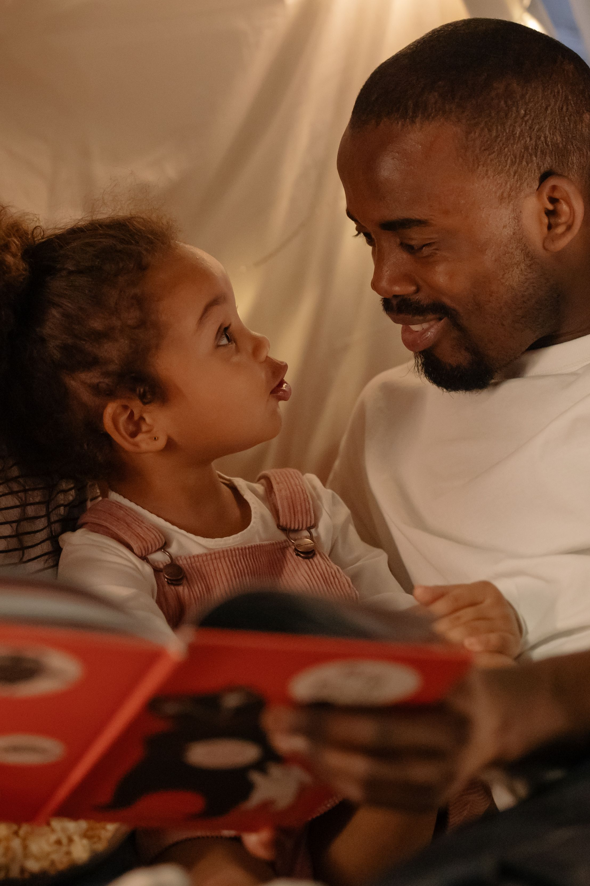

Your Child May Not Say It: What Every Parent Needs to Understand
Children do not always have the words to explain what is happening inside them. Sometimes they become quiet. Sometimes they change their behaviour. Sometimes they appear difficult when what they really need is attention, patience, guidance or someone willing to listen. This is a message to parents about looking beyond what a child says and paying attention to what the child may be trying to communicate.

There is something every parent eventually has to understand: raising a child is not only about providing food, clothes, school fees and a place to sleep. Those things matter greatly, but a child also needs something that cannot be bought from a shop. A child needs to feel that there is someone who will listen when life becomes difficult.
I believe one of the biggest mistakes adults can make is assuming that silence means everything is fine. A child may say, “I am okay,” while carrying a problem they do not know how to explain. Another child may become angry, distant, unusually quiet or constantly attached to a phone. Behaviour can have many explanations, and parents should avoid immediately assuming the worst. But changes in behaviour are worth noticing.
Childhood and adolescence are periods of enormous change. A young person is learning about friendship, identity, responsibility, failure, confidence, rejection, school, money, relationships and the expectations of other people. Some children handle these changes openly. Others keep everything inside.
That is why this article is not about blaming parents or blaming children. It is about paying attention. It is about asking better questions. It is about understanding that sometimes a child does not need a long lecture. Sometimes the child needs a safe conversation.
The earlier parents understand this, the more opportunities they have to guide their children before small problems become much larger ones.
Children Do Not Always Know How to Explain What They Feel
Adults sometimes expect children to communicate their problems in the same organised way adults do. A parent may ask, “What is wrong?” and expect a clear answer. But a young child may not have the emotional vocabulary to explain fear, embarrassment, loneliness, pressure or disappointment.

Even teenagers who understand their emotions better may still struggle to talk about them. They may worry that a parent will become angry. They may believe that their problem is too small to matter. They may fear being judged. Sometimes they simply do not know where to begin.
This is why listening starts before the serious conversation. A parent who regularly talks with a child about ordinary things creates opportunities for difficult conversations later.
Asking about school should not always mean asking only about marks. Ask about friends. Ask what made them laugh. Ask what frustrated them. Ask what they found difficult. Ask what they are looking forward to. These simple questions can help a parent understand the person behind the school report.
Being Present Is More Than Being in the Same House
A parent can be physically present and still be emotionally unavailable. Sitting in the same room is not necessarily the same as giving a child attention.
Modern life creates many distractions. Work, business, financial pressure, phones, social media and other responsibilities can consume a parent's attention. Parents also have real problems of their own. Providing for a family can be exhausting.
But children remember moments when someone genuinely listened to them. Presence does not mean a parent must spend every minute with a child. It means making meaningful time when the child needs connection.
A short conversation without a phone interrupting it can sometimes be more valuable than hours spent in the same house without communication.
Do Not Wait Until Your Child Has a Serious Problem
One of the strongest habits a family can develop is communication before a crisis. If parents only start asking questions when something has already gone wrong, the child may associate parental attention with punishment or trouble.
Communication should happen when life is going well too.
Talk about ordinary experiences. Discuss decisions. Allow children to ask questions. Explain why certain rules exist. Talk about consequences. Teach them how to recognise good and bad influences.
A child who regularly experiences respectful conversations may find it easier to approach a parent when something serious happens.
Discipline Should Teach, Not Only Punish
Children need boundaries. Rules are part of growing up. Parents have a responsibility to teach children what is acceptable, what is dangerous and what responsibilities come with freedom.
But discipline can lose its purpose when it becomes only about anger.
When correcting a child, parents should try to separate the behaviour from the child's identity. There is a difference between saying, “What you did was wrong,” and telling a child, “You are a bad person.”
The first statement addresses behaviour. The second can attack identity. Children are still developing their understanding of themselves, so repeated negative labels can affect how they see their own abilities and worth.
Good discipline should help a child understand what happened, why it was wrong, what the consequences are and what should be done differently next time.
Parents can be firm without humiliating their children. They can maintain boundaries while still making it clear that love has not disappeared.
Listen Before Giving the Answer
Parents naturally want to solve problems. When a child explains something, the immediate reaction may be to give advice.
Advice has its place, but listening should come first.
Imagine a child comes home disappointed after failing an examination. The parent immediately says, “I told you to study.” The statement may be true, but it may close the conversation.
A better beginning could be, “Tell me what happened.”
That simple sentence creates room for the child to explain. Perhaps the child did not understand the subject. Perhaps there were problems at school. Perhaps they were distracted by something else. Perhaps they studied but used ineffective methods.
Listening does not mean agreeing with everything a child says. It means understanding the situation before deciding how to respond.
Your Child Needs Guidance About Decisions
Children eventually make decisions without their parents standing beside them. That is one of the realities of growing up.
The goal of parenting should therefore not be to control every decision forever. Parents should gradually teach children how to think about decisions.
What are the consequences? Who is influencing you? What are you gaining? What could you lose? Is this choice helping the person you want to become?
These questions can be more useful than simply saying, “Do this because I said so.”
There will be a time when the child leaves school, gets a job, starts a business, moves to another place, chooses friends independently and faces decisions without immediate parental supervision.
The parent who has taught decision-making has given the child something that remains useful even when the parent is not physically present.
Money Is Also a Lesson Children Need
Children learn about money from what adults say and what adults do. Parents do not need to reveal every private financial detail to teach useful money lessons. They can teach the difference between needs and wants, the value of saving, the consequences of unnecessary debt and the importance of planning.
Money conversations can also help children understand that income is not the same as wealth. Someone can earn more and still make poor financial decisions. Someone can have little money and still develop disciplined financial habits.
I have explored this idea in more detail in The Man Who Earned More Money But Became Poorer .
The lesson is useful for parents because financial habits often begin long before a child receives a large salary. Teaching patience, responsibility and planning can prepare a young person for decisions they will eventually make independently.
Do Not Compare Your Child With Everyone Else
Comparison is common in families. A parent sees another child performing well at school, succeeding in sports or behaving differently and wonders why their own child is not doing the same.
Comparison can sometimes motivate, but constant comparison can also make a child feel that love and approval depend on performance.
Every child has different strengths, weaknesses, interests and development. Parents should still expect effort and responsibility, but they should also learn to recognise the individual child.
The useful question is not always, “Why are you not like that child?” Sometimes the better question is, “What can you improve from where you are today?”
Pay Attention When Your Child's Behaviour Changes
A change in behaviour does not automatically mean that something serious is wrong. Children grow, friendships change, school becomes more demanding and personalities develop.
Still, significant or persistent changes deserve attention.
A child who suddenly withdraws from family activities, loses interest in things they previously enjoyed, becomes unusually aggressive, struggles with sleep, repeatedly avoids school or appears persistently distressed may need a caring conversation.
Parents should not diagnose a child based on one behaviour. Instead, they should look at the wider situation and, when necessary, seek appropriate professional or school support.
The important point is not to ignore a child simply because the child has not asked for help.
Teach Children That Asking for Help Is Not Weakness
Some children believe they must handle everything alone. They may think asking for help makes them weak or disappointing.
Parents can change that message by openly explaining that everybody needs help sometimes.
A child should know who they can approach when they are confused, frightened, bullied, pressured or unable to solve a problem alone.
This does not mean parents should remove every difficulty from a child's life. Children need opportunities to solve age-appropriate problems. But they should also know that support exists when a problem becomes too difficult to handle alone.
Protect the Relationship While Correcting the Behaviour
There will be disagreements between parents and children. That is normal. Children will make mistakes. Parents will sometimes make mistakes too.
What matters is what happens after the disagreement.
A parent can apologise when they have responded badly. Doing so does not remove parental authority. It can teach the child that responsibility applies to everyone.
Similarly, a child can be corrected without being rejected as a person. Separating love from approval of every behaviour is important. A parent can say, in effect, “I love you, but this decision was not acceptable.”
That distinction can help children understand accountability without feeling that one mistake has permanently destroyed their relationship with a parent.
Children Also Need to See Good Examples
Parents teach through words, but children also learn by watching.
A parent who teaches honesty while regularly lying sends a conflicting message. A parent who teaches respect while insulting other people teaches another lesson through behaviour.
This does not mean parents must be perfect. No parent is perfect. It means children should be able to see adults trying to live by the values they are teaching.
If a parent makes a mistake, acknowledging it can itself become a lesson. Children can learn that mistakes are followed by responsibility, correction and improvement.
Do Not Ignore the Influence of Friends and the Internet
Parents are no longer the only major influence in a child's life. Children interact with classmates, friends, online communities, creators and personalities through phones and other devices.
This creates opportunities as well as risks.
Parents should understand what their children are interested in online without assuming that every online activity is dangerous. The goal should be responsible guidance rather than simply fear.
Teach children not to share sensitive personal information carelessly, not to trust strangers simply because they appear friendly online, and not to measure their worth by everything they see on social media.
At the same time, parents should create enough trust that a child can report a disturbing online experience instead of hiding it because they fear immediate punishment.
Let Your Child Know That Their Voice Matters
Children should not control every family decision, but they should have opportunities to express themselves.
Ask what they think. Ask why they disagree. Ask what they would do differently. You may not always accept their suggestion, but allowing them to explain themselves teaches communication and confidence.
A child who learns that their opinions can be discussed respectfully may grow into an adult who is more comfortable communicating difficult ideas.
This is also connected to personal growth. Learning to express an opinion, accept correction and reconsider a decision are important life skills. More reflections on these areas can be found on my Mindset & Life section.
Do Not Measure a Child Only by Achievement
Good grades, sporting ability and other achievements can make parents proud. They can also open opportunities for children.
But achievement should not become the only measure of a child's value.
A child may struggle academically and still possess kindness, creativity, determination, leadership, practical intelligence or another strength that takes time to develop.
Parents should encourage children to work hard while also helping them understand that one examination, one competition or one failure does not define their entire future.
Even successful people experience setbacks. The important lesson is learning how to respond to them.
Prepare Them for the Day They Will Leave
One of the difficult realities of parenting is that children eventually grow up.
The little child who once needed help with almost everything may eventually make decisions independently. They may leave home for school, employment, business, marriage or another opportunity.
Parents should not wait for that moment to start teaching independence.
Children can gradually learn responsibility through ordinary tasks: managing small amounts of money, keeping belongings organised, helping around the home, making age-appropriate choices and understanding consequences.
Independence should grow gradually. The purpose is not to push children away. It is to prepare them for a world where parents cannot make every decision for them.
What Parents Can Start Doing Today
Parenting advice can become meaningless if it remains only a collection of ideas. The real question is what a parent can do differently today.
Start with one conversation.
Put the phone away and ask your child how life is going. Do not immediately interrupt with a lecture. Listen. If they share something difficult, thank them for telling you.
If your relationship with your child has become distant, do not expect one conversation to repair everything. Trust can take time to rebuild. Consistent small actions may matter more than one emotional speech.
Make time for them. Learn what they enjoy. Know the people they spend time with. Ask about their goals. Teach them about money. Discuss consequences. Correct them when necessary. Encourage them when they make progress.
Most importantly, let them know that they can come to you before a problem becomes a crisis.
There Is Still Time to Build a Better Relationship
Some parents reading this may feel that they have already missed important opportunities. Perhaps communication has been poor. Perhaps work has taken too much time. Perhaps past arguments created distance.
That does not mean nothing can change.
A parent can begin with an honest conversation. There is no need for a perfect speech. Sometimes a simple question such as, “How have you really been doing?” can open a door.
The response may not come immediately. The child may remain quiet. That does not necessarily mean the effort was useless. Trust often develops through repeated evidence that someone is genuinely willing to listen.
Parents should also remember that children are not projects to be completed. They are people developing their own identities, personalities, abilities and responsibilities.
The role of a parent is to guide that development, protect where necessary, establish boundaries, teach responsibility and provide a foundation from which the child can eventually become an independent adult.
Final Thoughts
Your child may not always tell you when they are struggling. They may not explain every fear, disappointment, mistake or question. Sometimes the only sign may be a change in behaviour. Sometimes there may be no obvious sign at all.
That is why parenting requires more than providing material needs. It requires attention.
Listen when your child speaks. Notice when something changes. Give guidance without making every conversation a lecture. Set boundaries without removing love. Teach responsibility without demanding perfection. Allow children to make age-appropriate decisions while preparing them for the consequences of those decisions.
And remember that children eventually grow up.
The time a parent has with a child is not unlimited. School years pass. Friendships change. Opportunities come and go. One day the child who needed constant guidance may be living an independent life.
What matters is what you build before that day arrives.
Build communication. Build trust. Build responsibility. Build confidence. Build a relationship where your child knows that difficult conversations are possible.
You cannot protect a child from every difficulty in life. You cannot make every decision for them. But you can give them something valuable: the knowledge that they have someone who cares enough to listen, guide and tell them the truth.
That may be one of the most important things a parent can give a child.
Frequently Asked Questions
Why might a child hide problems from their parents?
A child may be afraid of punishment, embarrassment, judgement or disappointing their parents. Some children may also struggle to explain complicated emotions. Creating regular, respectful conversations can make it easier for children to ask for help.
How can parents communicate better with their children?
Parents can listen without immediately interrupting, ask open questions, make regular time for conversation and avoid turning every discussion into a lecture. Children should know that they can speak honestly while still understanding that parents will establish appropriate boundaries.
Should parents always give their children what they want?
No. Children need boundaries, responsibilities and appropriate limits. Good parenting involves explaining expectations and consequences while maintaining a caring relationship.
What should a parent do if a child's behaviour changes suddenly?
A parent can calmly observe the change, start a conversation and consider what else may be happening in the child's life. If concerning behaviour is persistent or severe, parents should consider seeking appropriate support from a qualified professional or another trusted source.
How can parents prepare children for adulthood?
Parents can gradually teach responsibility, decision-making, money management, communication, problem-solving and the consequences of choices. Independence should develop gradually according to the child's age and circumstances.
Can a parent repair a distant relationship with a child?
Relationships can change over time. A parent can begin by acknowledging the distance, listening without immediately becoming defensive and making consistent efforts to communicate. Rebuilding trust may take time, so patience and consistency are important.